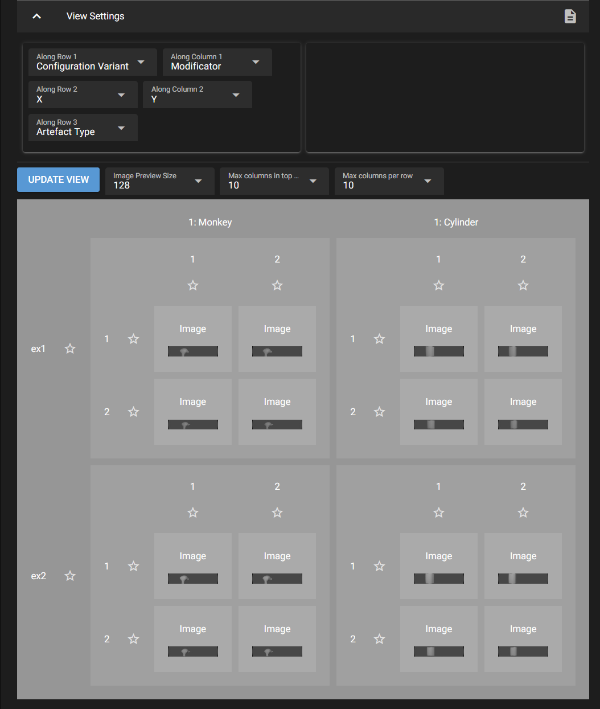

Example Workflow#
This is a walkthrough of a typical workflow using Catharsys for rendering and post-processing with the web GUI. The basic idea is that a specialist prepares a Cataharsys configuration, exposing some parameters to the GUI that can be changed by a user. Typical parameters could be the camera to use, the objects to import and anything else that can be modified in a Blender scene. The user then uses the Web GUI to set the parameters, launch rendering and post-processing and view the rendered images.
The web server executing the renders can be on any machine that is reachable via the network. The system also supports mutliple concurrent users working with the same base configuration and starting renderings or other actions.
0. Install the Example#
To follow along with this example, you need to have Catharsys installed (Catharsys Installation). Then clone the workspace image-render-workspace-ex-gui and in the top folder of the cloned repository run
Shell
cathy blender init –all –addons
This only works if Blender 4.1 is already installed in the Catharsys system. Otherwise, install Blender 4.1 in Catharsys as described here: Blender.
TL;DR
Open a terminal in the main folder of the cloned example workspace, run cathy gui ws which should open a web browser, select configuration ex3 in the shown workspace view, select action render, click prepare launch, launch the render, go back to workspace tab, click the eye-icon, click Scan Filesystem and then Update View.
1. Prepare the Project#
The first step is to prepare your Catharsys project for use with the GUI.
Note
If you cloned the example, it is already prepared and you can go to section 2.
If you just use a standard configuration you will also have a minimal GUI that allows you to start renders and post-processing actions. However, not all arguments you are interested in may be visible and the GUI can be overloaded with parameters a user doesn’t need to or shouldn’t change.
To specify what parameters are displayed how, see Modify Configurations and the reference sections GUI Controls and GUI Definition Dictionary.
To see the rendered images in the image viewer, you first need to specify the path structure of the rendered images in the
production.jsonconfiguration. See Web Image Viewer and Production Analysis for a detailed description.To allow the user to flag or evaluate images or categories, see Production Categorization for a detailed description. The example configurations
ex1,ex2andex3ofimage-render-workspace-ex-guicontain such a definition.
2. Start the Web Server#
To run the web server locally with standard settings, just execute
Shell
cathy gui ws
You can access the web server with an http instead of a https-connection by starting it with the option --no-ssl:
Shell
cathy gui ws --no-ssl
This will open a web-browser automatically with the workspace view. You can also start the web server on any other machine and then connect to it via one of the IP adresses shown in the terminal. You may have to establish an SSH tunnel for this to work. If you are using a terminal in VSCode on a remote machine, then VSCode will establish an SSH tunnel automatically. For more details on setting up the web server and creating user accounts, see Catharsys Web GUI - Getting Started.
Important
Note that all configuration variants and other settings and result data, are stored independently per OS-user. This allows multiple OS-users to run web servers on the same workspace concurrently.
3. Set the Parameters#
Select the configuration ex3 and unfold the global launch, action and trial parameter views.
Name the trial variant#
Name the trial variant Monkey: Use object 'Monkey' in the field next to the variant selection. The text in front of the : is used as name in the drop-down selection box.
Create new trial variant#
Create a new trial variant by clicking on the + next to the trial variant name.
Now give the second trial a name and change the rendered object to cylinder as shown here:
You can, of course, also change any other settings, like the set of cameras to use or which modifiers to apply.
4. Render Variants#
Select the first trial variant Monkey and in the action block select the render action as shown here:
Then click the Prepare Launch button next to the action. This will create a copy of all configuration files for the currently selected variants and open this new view:
You can still go back to the workspace view by clicking on WORKSPACE at the top and return to this launch screen. This is also possible, while the actual rendering is running. Note that changing configuration parameters while the rendering runs is possible, since the render job(s) use a copy of all configuration files. However, this makes it more difficult to associate a configuration with the rendered images.
Note
The variant files and launch instances are stored in a folder .variants-[system user id] inside the corresponding configuration folder. This enables multiple system users to start a web server for the same workspace concurrently. Inside a variants folder, the actually modified configuration files are stored in sub-folders per web user as managed by the Catharsys web view.
If you press the Launch button the action, in this case the rendering, starts. The output can be seen in the Job Output area. If the web server runs on a GPU cluster with an LSF job management system and the execution configuration configures the use of that system, you may see a number of jobs in this view. The job status is shown but the job’s output is only available once the job finishes.
If you press the Close button, all jobs are terminated and the copy of the configuration files created for the processing is deleted. The view is also closed and you return to the workspace view.
Now press Launch and wait for the images to be rendered. The progress is also shown in the status line below the buttons. When the rendering is finished the view should look like this:
Press the Close button to close the view and delete the configuration instance files used for this rendering.
Now select the Cylinder trial variant and render the images the same way as before.
5. Show Rendered Images#
To view the rendered images, select the eye-icon in the workspace view, next to the configuration selection, as shown here:
This creates a new tab, which initially looks like this:
Note, that you can open a viewer for each configuration in the workspace concurrently. To view the generated images, first click on Scan Filesystem and the Update View.
Note
You have to re-scan the filesystem every time you render new artefacts (images, depth, ground truth, etc.). The Update View button has to be pressed every time the file system was re-scanned, or the product or view settings were changed.
Note
The category of a label is shown, when you hover with the mouse over the label.
View Settings#
The order of the variation dimensions is set in the view settings, which currently look like this:
You can order the variation dimensions arbitrarily. Here is another order:

If you go back to the workspace settings, you can modify the parameters, render again, then re-scan the filesystem in the viewer and update the view, to see the effect of the changes.
Production Selection#
In the Product Selection block, you can select which elements are shown per variation dimension. By default all elements are selected in each dimension. Here is an example of selecting only a sub-set of all products:
Additional Artefacts#
If you execute the depth action from the workspace view for just the cylinder trial variant, and the re-scan and update the view, the output looks like this:

As no depth images have been generated for the trial variant Monkey, the missing elements are displays as a warning triangle.
6. Marking Categories#
The production configuration defines the category Favourite as a boolean and associates it with the camera, the two loops and the modifier. The empty stars in the image viewer can be clicked to select the category Favourite for a specific element in one of the variables. For example, for one of the loops you can select one index to make it your favourite. For more details see Production Categorization.
The selected categories are written immediately to JSON file in the _output/[os user]/[web user] directory of the corresponding workspace. The os-user is the user logged into the OS and the web-user is the user logged into the Catharsys web GUI. If no explicit web users were created, the web-user is public. This file can be analysed later for further post-processing of the selected data.